坦克设计
原页面：Tank designer
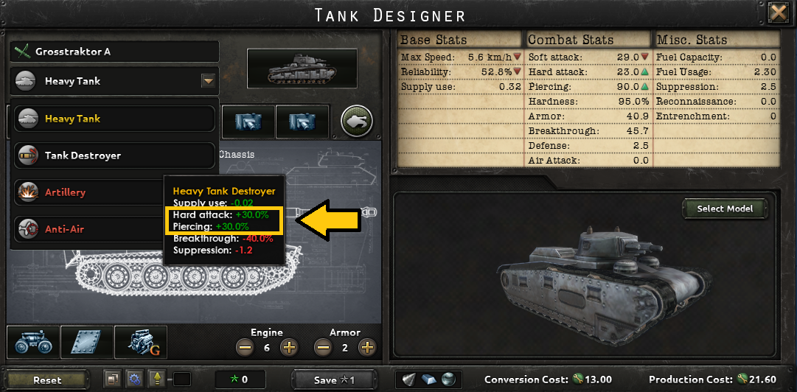
坦克装备模块通过armor technology科技树解锁基础底盘、发动机和装甲模块。主武器模块通过artillery technology解锁。额外的支援或特殊模块则通过通用科技树解锁（例如engineering tech tree中的无线电）。
Chassis
底盘是车辆的框架，所有其他模块都构建在其之上。
坦克底盘
坦克底盘有三种主要类型：轻型、中型和重型。它们分别对应 轻型、
轻型、 中等和
中等和 重型坦克，以及它们的装甲变体，例如
重型坦克，以及它们的装甲变体，例如 自行防空炮
自行防空炮 、
、 自行火炮
自行火炮 和
和 坦克歼击车，还有装甲支援连。这些底盘的新版本可以通过科研解锁。科研还可以解锁一些更专业的坦克底盘类型。在其他限制之外，底盘类型决定了坦克能够安装的最大炮塔尺寸，从而限制了坦克可使用的武器。只有将设计的主炮塔换成固定战斗室才能绕过这一限制。
坦克歼击车，还有装甲支援连。这些底盘的新版本可以通过科研解锁。科研还可以解锁一些更专业的坦克底盘类型。在其他限制之外，底盘类型决定了坦克能够安装的最大炮塔尺寸，从而限制了坦克可使用的武器。只有将设计的主炮塔换成固定战斗室才能绕过这一限制。


| Chassis | 类型 | 年份 | 最大速度 | 装甲 | 硬度 | 可靠性 | 生产花费 | 每座工厂的资源使用量 | 服役人力 | 前置条件 | |
|---|---|---|---|---|---|---|---|---|---|---|---|
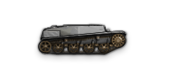 |
战间期轻型坦克底盘 | 轻型 | 1922 | 5.1 公里/小时 | 10 | 80% | 80% | 2 |
1 |
2 |
战间期坦克研发 |
| 基础轻型坦克底盘 | 轻型 | 1934 | 6.3 公里/小时 | 15 | 80% | 95% | 2.35 |
1 |
2 |
基础轻型坦克底盘 | |
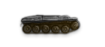 |
改进型轻型坦克底盘 | 轻型 | 1936 | 7.4 公里/小时 | 20 | 80% | 110% | 2.7 |
1 |
2 |
改进型轻型坦克底盘 |
| 先进轻型坦克底盘 | 轻型 | 1942 | 8.6 公里/小时 | 25 | 80% | 130% | 3 |
2 |
2 |
先进轻型坦克底盘 | |
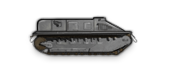 |
战间期中型坦克底盘 | 中等 | 1922 | 5.1 公里/小时 | 20 | 85% | 75% | 3.5 |
1 |
2 |
战间期坦克研发 |
| 基础中型坦克底盘 | 中等 | 1938 | 6.3 公里/小时 | 30 | 85% | 80% | 3.75 |
1 |
2 |
基础中型坦克底盘 | |
| 改进型中型坦克底盘 | 中等 | 1940 | 7.4 公里/小时 | 40 | 85% | 100% | 4 |
1 |
2 |
改进型中型坦克底盘 | |
| 先进中型坦克底盘 | 中等 | 1943 | 7.4 公里/小时 | 50 | 85% | 120% | 4.25 |
2 |
2 |
先进中型坦克底盘 | |
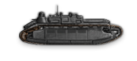 |
战间期重型坦克底盘 | 重型 | 1922 | 4 公里/小时 | 35 | 95% | 75% | 9 |
1 |
2 |
战间期坦克研发 |
| 基础重型坦克底盘 | 重型 | 1934 | 6.3 公里/小时 | 55 | 95% | 80% | 10 |
1 |
2 |
基础重型坦克底盘 | |
| 改进型重型坦克底盘 | 重型 | 1940 | 6.3 公里/小时 | 60 | 95% | 110% | 11 |
1 |
2 |
改进型重型坦克底盘 | |
| 先进重型坦克底盘 | 重型 | 1943 | 6.3 公里/小时 | 75 | 95% | 120% | 12 |
2 |
2 |
先进重型坦克底盘 | |
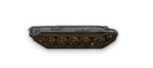 |
现代坦克底盘 | Modern | 1945 | 8.6 公里/小时 | 65 | 95% | 120% | 6 |
2 |
2 |
现代坦克底盘 |
 |
超重型坦克底盘 | Super-Heavy | 1943 | 4.9 公里/小时 | 90 | 100% | 100% | 28 |
3 |
2 |
|
| 两栖坦克底盘 | 两栖 | 1938 | 6.3 公里/小时 | 15 | 85% | 110% | 4.5 |
1 |
2 |
两栖坦克底盘 |
陆地巡洋舰底盘
这些底盘对应 陆地巡洋舰支援连。它们使用与坦克不同的独特模块。
陆地巡洋舰支援连。它们使用与坦克不同的独特模块。
| Chassis | 类型 | 年份 | 最大速度 | 装甲 | 硬度 | 可靠性 | 生产花费 | 每座工厂的资源使用量 | 服役人力 | 前置条件 | |
|---|---|---|---|---|---|---|---|---|---|---|---|
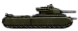 |
陆地巡洋舰底盘 | 陆地巡洋舰 | 1943 | 5 公里/小时 | 150 | 100% | 330 |
8 |
30 |
发动机
发动机模块代表用于驱动坦克的推进系统类型，以及该推进系统的功率大小。
发动机类型
坦克设计必须选择发动机类型模块才有效。汽油发动机是坦克的默认发动机类型模块。
| Module | 最大速度 | 突破 | 防御 | 可靠性 | 燃料消耗 | 生产花费 | 设计花费 | 前置条件 | |
|---|---|---|---|---|---|---|---|---|---|
| 柴油发动机 | +25% | 2 |
1 |
6 | |||||
| 燃气轮机 | +0.5 公里/小时, +25% | –10% | 4 |
3 |
6 |
||||
| 汽油发动机 | +0.5 公里/小时, +15% | 2 |
1 |
默认类型 （否则为 6） |
|||||
| 汽油-电动发动机 | +2, +15% | +2, +15% | –50% | 2 |
2 |
6 |
发动机升级
可以通过升级等级来提升发动机的属性。每一级提供的叠加效果都相同。
| 发动机升级等级 | 每级升级效果 | 前置条件 |
|---|---|---|
| 0 - 4 |
|
– |
| 5 - 9 | 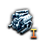 基础引擎 | |
| 10 - 14 | 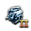 改进型发动机 | |
| 15 - 17 | 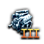 先进引擎 | |
| 18 - 20 | 现代发动机 |
Suspension
悬挂模块代表用于支撑坦克及其乘员重量的悬挂系统类型，同时确保坦克在移动时足够稳定，以便可靠地使用武器。坦克设计必须选择悬挂模块才有效。转向架悬挂是坦克的默认悬挂模块。
履带悬挂
履带悬挂适用于所有底盘类型。
| Module | 最大速度 | 突破 | 可靠性 | 生产花费 | 设计花费 | 前置条件 | |
|---|---|---|---|---|---|---|---|
| 转向架悬挂 | 默认类型 （否则为 6） |
– | |||||
| 克里斯蒂悬挂 | +20% | 1 |
6 |
– | |||
| 交错式负重轮 | 4 | 2 |
6 |
– | |||
| 扭杆悬挂 | +15% | 1 |
6 |
– |
非履带悬挂
非履带悬挂仅适用于轻型底盘。它们降低生产成本、降低可靠性，并降低硬度。
| Module | 硬度 | 可靠性 | 生产花费 | 设计花费 | 前置条件 | |
|---|---|---|---|---|---|---|
| 半履带悬挂 | –30% | –10% | –5% |
6 |
||
| 轮式悬挂 | –40% | –20% | –10% |
6 |
装甲
装甲模块代表在建造坦克底盘及其装甲时所采用的工艺。
装甲类型
坦克设计必须选择装甲类型模块才有效。铆接装甲是坦克的默认装甲类型。
| Module | 装甲 | 突破 | 防御 | 硬度 | 生产花费 | 每座工厂的资源使用量 | 设计花费 | 前置条件 | |
|---|---|---|---|---|---|---|---|---|---|
| 铆接装甲 | 2 | 2 | –20% |
默认类型 （否则为 8） |
|||||
| 铸造装甲 | +30% | 3 | 3 | +2% | +20% |
8 |
|||
| 焊接装甲 | +30% | 4 | 4 | 1 |
8 |
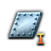 基础装甲防护 | |||
| 简易装甲 | 0 | 1 | –30% | –30% |
8 |
装甲升级
可以通过升级等级来提升装甲属性。每一级提供的叠加效果都相同。
| 装甲升级等级 | 每级升级效果 | 每座工厂的资源使用量 | 前置条件 |
|---|---|---|---|
| 0 - 4 |
|
– | – |
| 5 - 9 |
|
基础装甲防护 | |
| 10 - 14 | 改进型装甲防护 | ||
| 15 - 17 | 先进装甲防护 | ||
| 18 - 20 | 现代装甲防护 |
Turret
炮塔是突破的主要来源，代表着车内的视野、乘员工作空间的大小及其工作负荷。底盘类型决定炮塔的最大尺寸。炮塔尺寸决定其可安装武器的尺寸。较小的武器总是可以安装。固定战斗室允许安装更大尺寸的火炮，并提供更高的可靠性，但代价是突破。固定战斗室无法安装防空炮，因为它无法跟踪目标，也无法将火炮抬升到足以击中飞机的高度。
| Module | 可用底盘 | 可用角色 | 最大武器尺寸 | 最大速度 | 软攻 | 硬攻 | 突破 | 防御 | 可靠性 | 生产花费 | 设计花费 | |
|---|---|---|---|---|---|---|---|---|---|---|---|---|
| 轻型固定战斗室 |
|
中等 | −25% | 3 | +20% | 1 |
2 | |||||
| 轻型单人炮塔 | Small | 7 | 1 |
2 | ||||||||
| 轻型双人炮塔 | Small | 10 | 1.25 |
2 | ||||||||
| 轻型三人炮塔 | Small | −0.1 公里/小时 | 14 | 1.5 |
2 | |||||||
| 中型固定战斗室 |
|
重型 | −25% | 3 | +20% | 1.5 |
2 | |||||
| 中型单人炮塔 | 中等 | –5% | –5% | 8 | 1.25 |
2 | ||||||
| 中型双人炮塔 | 中等 | 16 | 1.75 |
2 | ||||||||
| 中型三人炮塔 | 中等 | −0.2 公里/小时 | 24 | 2.25 |
2 | |||||||
| 重型固定战斗室 |
|
Super-Heavy | −25% | 3 | +20% | 5 |
2 | |||||
| 重型双人炮塔 | 重型 | 18 | 5 |
2 | ||||||||
| 重型三人炮塔 | 重型 | −0.2 公里/小时 | 22 | 5.5 |
2 | |||||||
| 超重型三人炮塔 | Super-Heavy | Super-Heavy | −0.2 公里/小时 | –10% | 24 | –10% | 10 |
2 | ||||
| 超重型四人炮塔 | Super-Heavy | −0.5 公里/小时 | 35 | −25% | 12 |
2 | ||||||
| 现代炮塔 | Modern | 重型 | 24 | 8 |
2 | |||||||
| 简易炮塔 | 轻型 | Small | 1 | −25% | 0.1 |
2 |
Weapons
坦克武器
坦克的武器是其最显著的特征之一。除了提供车辆大部分乃至全部火力之外，主炮还决定了该设计能够担任哪些角色。例如，安装防空炮会使该坦克设计无法被用作「坦克」。
选择坦克以外的角色会大幅降低该营的突破。除此之外，根据所选角色的不同，基础属性只有细微差异。需要注意的是，不同的角色可能会因已研究的科技、学说或将领而获得不同的加成。
小型武器
这些武器可以安装在任何拥有合适尺寸炮塔的坦克底盘上。
| Module | 可用角色 | 武器尺寸 | 突破 | 软攻 | 硬攻 | 对空攻击 | 最大速度 | 穿甲 | 可靠性 | 生产花费 | 每座工厂的资源使用量 | 设计花费 | 前置条件 | |
|---|---|---|---|---|---|---|---|---|---|---|---|---|---|---|
| 重机枪 | Small | 8 | 2 | 6 | 0.5 |
1 |
||||||||
| 自动机炮 | Small | 15 | 5 | −0.1 公里/小时 | 20 | –10% | 1.5 |
1 |
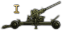 牵引防空炮 | |||||
| 改进型自动机炮 | Small | 20 | 7 | −0.1 公里/小时 | 35 | –10% | 2 |
1 |
||||||
| 基础防空炮 | 防空坦克 |
Small | 6 | 2 | 18 | 10 | –10% | 2 |
1 |
牵引防空炮 | ||||
| 改进型防空炮 | Small | 8 | 5 | 32 | 18 | –10% | 3 |
2 |
1 |
|||||
| 先进防空炮 | 中等 | 10 | 5 | 46 | 24 | –10% | 4 |
3 |
1 |
先进防空炮 | ||||
| 小型火炮 | Small | 10 | 6 | −0.1 公里/小时 | 25 | –10% | 1.5 |
1 |
||||||
| 改进型小型机炮 | Small | 15 | 15 | −0.1 公里/小时 | 50 | –10% | 3 |
1 |
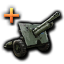 战间期火炮 | |||||
| 中型机炮 | 坦克歼击车
|
中等 | +2 | 20 | 15 | −0.2 公里/小时 | 60 | –15% | 3 |
1 |
1 |
改进火炮 | ||
| 改进型中型机炮 | 坦克歼击车
|
中等 | +4 | 32 | 20 | −0.3 公里/小时 | 90 | –15% | 4 |
2 |
1 |
以下之一： | ||
| 近距支援炮 | 火炮 | Small | 22 | 5 | −0.2 公里/小时 | 10 | –10% | 4 |
1 |
1 |
战间期火炮 | |||
| 中型榴弹炮 | 火炮
|
中等 | –2 | 35 | 1 | −0.3 公里/小时 | 20 | –20% | 4 |
2 |
1 |
改进火炮 | ||
| 改进型中型榴弹炮 | 火炮
|
中等 | –2 | 45 | 2 | −0.4 公里/小时 | 30 | –20% | 5.5 |
3 |
1 |
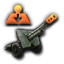 改进火炮升级 II | ||
| 火箭发射器 | 火炮坦克 |
中等 | –4 | 25 | 1 | −0.1 公里/小时 | 2 | –10% | 4 |
1 |
1 |
|||
| 改进型火箭发射器 | 中等 | –4 | 35 | 1 | −0.2 公里/小时 | 2 | –10% | 5 |
1 |
1 |
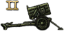 先进火箭炮 | |||
| 基础高速炮 | 坦克歼击车 | Small | 10 | 26 | −0.1 公里/小时 | 68 | –5% | 3 |
2 |
1 |
||||
| 改进型高速炮 | 坦克歼击车
|
中等 | 20 | 35 | −0.3 公里/小时 | 125 | –17.5% | 5 |
2 |
1 |
改进反坦克升级 II | |||
| 先进高速炮 | 坦克歼击车
|
重型 | 25 | 45 | −0.4 公里/小时 | 200 | –20% | 7 |
3 |
1 |
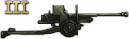 先进反坦克炮 | |||
| 基础重型机炮 | 坦克歼击车
|
重型 | 20 | 20 | −0.3 公里/小时 | 90 | –25% | 6 |
2 |
1 |
以下之一： | |||
| 改进型重型机炮 | 坦克歼击车
|
重型 | 25 | 35 | −0.4 公里/小时 | 125 | –25% | 7 |
2 |
1 |
以下之一： | |||
| 先进重型机炮 | 坦克歼击车
|
重型 | 30 | 40 | −0.5 公里/小时 | 170 | –30% | 8 |
3 |
1 |
以下之一： | |||
| 重型榴弹炮 | 火炮
|
重型 | −4 | 55 | 2 | −0.5 公里/小时 | 60 | –30% | 7 |
3 |
1 |
先进火炮升级 | ||
| 超重型加农炮 | 坦克歼击车
|
Super-heavy | 35 | 45 | −0.6 公里/小时 | 225 | –35% | 12.5 |
5 |
1 |
Flamethrowers
这些武器只能安装在轻型、中型或重型底盘上。
| Module | 可用角色 | 武器尺寸 | 突破 | 软攻 | 可靠性 | 生产花费 | 设计花费 | 前置条件 | |
|---|---|---|---|---|---|---|---|---|---|
| Flamethrower | Flame | Small | 5 | –5% | 0.5 |
1 |
|||
| 先进火焰喷射器 | Flame | Small | +6 | 12 | –5% | 1.2 |
1 |
陆地巡洋舰武器
这些是只能安装在陆地巡洋舰底盘上的武器模块。
主武器
| Module | 武器尺寸 | 突破 | 软攻 | 硬攻 | 对空攻击 | 最大速度 | 穿甲 | 可靠性 | 生产花费 | 每座工厂的资源使用量 | 设计花费 | 前置条件 | |
|---|---|---|---|---|---|---|---|---|---|---|---|---|---|
| 重型防空平台 | 陆地巡洋舰 | 20 | 20 | 10 | 80 | 50 | –5% | 10.0 |
5 |
1 |
先进防空炮 | ||
| 重型舰炮 | 陆地巡洋舰 | 40 | 60 | 55 | −0.6 公里/小时 | 240 | –20% | 20.0 |
7 |
1 |
|||
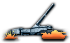 |
超重型列车炮 | 陆地巡洋舰 | 30 | 80 | 8 | −0.5 公里/小时 | 80 | –15% | 16.0 |
5 |
1 |
||
| 高冲击歼灭者机炮 | 陆地巡洋舰 | 25 | 35 | 75 | −0.4 公里/小时 | 280 | –10% | 15.0 |
4 |
1 |
副武器装备
| Module | 武器尺寸 | 突破 | 软攻 | 硬攻 | 额外附带伤害 | 对空攻击 | 最大速度 | 穿甲 | 可靠性 | 生产花费 | 每座工厂的资源使用量 | 设计花费 | 前置条件 | |
|---|---|---|---|---|---|---|---|---|---|---|---|---|---|---|
| 重型防空炮组 | 陆地巡洋舰 | 10 | 14 | 7 | 60 | 40 | 7.0 |
4 |
1 |
|||||
| 中型舰炮 | 陆地巡洋舰 | 25 | 42 | 52 | −0.4 公里/小时 | 230 | –10% | 16.0 |
6 |
1 |
||||
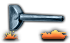 |
车体搭载式列车炮 | 陆地巡洋舰 | 15 | 70 | 5 | −0.4 公里/小时 | 70 | –10% | 14.0 |
4 |
1 |
|||
| 重型高速加农炮 | 陆地巡洋舰 | 15 | 30 | 55 | −0.3 公里/小时 | 250 | –5% | 12.0 |
4 |
1 |
先进反坦克炮 | |||
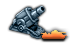 |
超重型榴弹炮 | 陆地巡洋舰 | 20 | 65 | 4 | 500 | −0.4 公里/小时 | 65 | –10% | 12.0 |
4 |
1 |
附加武器
| Module | 武器尺寸 | 突破 | 软攻 | 硬攻 | 额外附带伤害 | 对空攻击 | 最大速度 | 穿甲 | 可靠性 | 生产花费 | 每座工厂的资源使用量 | 设计花费 | 前置条件 | |
|---|---|---|---|---|---|---|---|---|---|---|---|---|---|---|
| 火焰喷射器炮塔 | 陆地巡洋舰 | 8 | 8 | –5% | 1.0 |
1 |
1 |
|||||||
| 轻型防空炮组 | 陆地巡洋舰 | 10 | 5 | 46 | 30 | 4.0 |
3 |
1 |
牵引防空炮 | |||||
| 中型机炮炮塔 | 陆地巡洋舰 | 8 | 32 | 20 | −0.2 公里/小时 | 90 | –5% | 4.0 |
2 |
1 |
改进火炮 | |||
| 高速加农炮炮塔 | 陆地巡洋舰 | 4 | 25 | 45 | −0.3 公里/小时 | 200 | –5% | 7.0 |
3 |
1 |
||||
| 突击炮 | 陆地巡洋舰 | 16 | 55 | 2 | 250 | −0.3 公里/小时 | 40 | –10% | 8.0 |
3 |
1 |
改进火炮 | ||
| 火箭发射器 | 陆地巡洋舰 | 4 | 35 | 1 | −0.2 公里/小时 | 2 | –5% | 5.0 |
1 |
1 |
辅助模块
这些模块可以装备在底盘的辅助（或特殊）模块槽位中。
坦克辅助模块
所有坦克底盘都有四个特殊模块槽位，可以安装下列模块，也可以留空。
副炮塔
副炮塔提高车辆的攻击力。可额外安装的炮塔数量取决于底盘类型：
- 轻型底盘最多只能安装 1 个副炮塔。
- 中型底盘最多只能安装 2 个副炮塔。
- 重型与超重型底盘最多可以安装 4 个副炮塔。
- 两栖和现代底盘完全无法安装副炮塔。
| Module | 突破 | 软攻 | 硬攻 | 可靠性 | 生产花费 | 设计花费 | 前置条件 | |
|---|---|---|---|---|---|---|---|---|
| 重机枪 | 4 | 1.5 |
1 |
|||||
| 小型火炮 | 2 | 5 | 3 | –10% | 3 |
1 |
坦克无线电
无线电提高车辆的突破和防御。一个底盘只能装备一个无线电模块。
| Module | 防御 | 突破 | 生产花费 | 设计花费 | 前置条件 | |
|---|---|---|---|---|---|---|
| 基础无线电 | +20% | +15% | 0.5 |
1 |
||
| 改进型无线电 | +40% | +25% | 1.5 |
1 |
||
| 先进无线电 | +60% | +40% | 2.5 |
1 |
坦克特殊模块
下列模块可以任意数量装备在底盘上。
| Module | 软攻 | 防御 | 突破 | 燃料容量 | 最大速度 | 可靠性 | 生产花费 | 设计花费 | 前置条件 | |
|---|---|---|---|---|---|---|---|---|---|---|
| 附加机枪 | 1 | 2 | 0.5 |
1 |
||||||
| 额外弹药储存 | 4 | 2 | –10% | 1 |
||||||
| 燃油桶 | +100 |
−0.2 公里/小时 | 1 |
3 | ||||||
| 烟幕发射器 | 2 | 1 | 0.5 |
1 |
坦克专属特殊模块
每种模块最多只能装备一个在底盘上。
| Module | 可用底盘 | 可用角色 | 防御 | 穿甲 | 装甲 | 突破 | 构筑工事 | 可靠性 | 生产花费 | 每座工厂的资源使用量 | 设计花费 | 前置条件 | |
|---|---|---|---|---|---|---|---|---|---|---|---|---|---|
| 两栖驱动 |
|
两栖 两栖以外的任意类型 |
–15% | 2 |
1 |
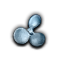 两栖驱动 | |||||||
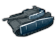 |
装甲裙板 |
|
3 | 3 | 0.5 |
1 |
改进型装甲防护 | ||||||
| 自动装弹机 | 4 | 4 | 1.5 |
1 |
以下之一： | ||||||||
| 推土铲 | 1 | 1 |
1 |
工兵连 II | |||||||||
| 易于维护 | +10% | -7.5% |
30 |
维修连 II | |||||||||
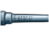 |
挤压膛线适配器 | +10% | +1 |
1 |
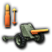 反坦克升级 | ||||||||
| 倾斜装甲 | +25% | +10% |
10 |
||||||||||
| Stabilizer | 5 | 2 |
1 |
||||||||||
| 湿式弹药储存 | +15% | 1 |
1 |
陆地巡洋舰特殊功能
这些模块只能安装在陆地巡洋舰底盘上。
空中投放
| Module | 防御 | 侦察（消歧义） | 对空攻击 | 燃料消耗 | 生产花费 | 设计花费 | 前置条件 | |
|---|---|---|---|---|---|---|---|---|
| 飞机弹射器 | 1 | 5 | 2 | 2 |
6 |
1 |
||
| Helipad | 1 | 8 | 2 | 1 |
4 |
1 |
结构特征
| Module | 防御 | 突破 | 软攻 | 最大速度 | 装甲 | 燃料消耗 | 燃料容量 | 可靠性 | 生产花费 | 设计花费 | 前置条件 | |
|---|---|---|---|---|---|---|---|---|---|---|---|---|
| 碉堡工事 | 10 | 10 | 10 | 8 | 1 |
8 |
1 |
|||||
| 内置弹药舱 | 4 | 2 | –5% | 1 |
||||||||
| 内置油箱 | −0.2 公里/小时 | 150 | 2 |
3 |
||||||||
| Stabilizers | 6 | 3 |
1 |
|||||||||
| 湿式弹药储存 | +15% | 2 |
1 |
外部特征
| Module | 防御 | 突破 | 对空攻击 | 生产花费 | 设计花费 | 前置条件 | |
|---|---|---|---|---|---|---|---|
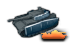 |
装甲裙板 | 6 | 6 | 8 |
1 |
先进装甲防护 | |
| 雷达 | +10% | +50% | 10 |
1 |
|||
| 发烟器 | 2 | 3 | 2 |
1 |
无线电系统
| Module | 防御 | 突破 | 生产花费 | 设计花费 | 前置条件 | |
|---|---|---|---|---|---|---|
| 基础无线电 | +20% | +15% | 2 |
1 |
||
| 改进型无线电 | +40% | +25% | 4 |
1 |
||
| 先进无线电 | +60% | +40% | 6 |
1 |
||
| 指挥中心 | +75% | +50% | 8 |
1 |
坦克角色
在坦克设计器中，你可以为设计指定角色。这使其能够被用于特定的装甲战斗支援营或专门的支援连，而不是普通的装甲营。改变设计的角色本身也会改变其部分属性，即使设计的其他内容完全不变。例如，玩家可以拥有两个完全相同的装甲车辆设计，其中一个被指定为 中型坦克，另一个被指定为
中型坦克，另一个被指定为 中型坦克歼击车，而这个完全相同设计的中型坦克歼击车版本仅仅因为被如此指定，就会拥有更高的硬攻和穿透。
中型坦克歼击车，而这个完全相同设计的中型坦克歼击车版本仅仅因为被如此指定，就会拥有更高的硬攻和穿透。
| 坦克变体 | 营类型 | 补给消耗 | 软攻 | 硬攻 | 穿甲 | 装甲 | Breakthough | 防御 | 镇压 |
|---|---|---|---|---|---|---|---|---|---|
| 轻型坦克 | |||||||||
| 中型坦克 | |||||||||
| 重型坦克 | |||||||||
| 现代坦克 | |||||||||
| 两栖坦克 | |||||||||
| -0.02 | –15% | –250% | |||||||
| -0.05 | –15% | –250% | |||||||
| -0.12 | –15% | –250% | |||||||
| 坦克歼击车 | -0.02 | +30% | +30% | –57% | –150% | ||||
| -0.03 | +30% | +30% | –40% | –125% | |||||
| -0.02 | +30% | +30% | –40% | –125% | |||||
| +30% | +30% | –25% | –125% | ||||||
| +30% | +30% | –40% | –125% | ||||||
| Artilery | +0.2 | +35% | –57% | –125% | |||||
| +0.21 | +35% | –40% | –100% | ||||||
| +0.28 | +35% | –40% | –100% | ||||||
| +0.4 | +35% | –25% | –125% | ||||||
| +0.25 | +35% | –40% | –100% | ||||||
| 防空炮 | -0.12 | –70% | –175% | ||||||
| -0.15 | –68% | –170% | |||||||
| -0.22 | –50% | –175% | |||||||
| -0.3 | –35% | –175% | |||||||
| -0.15 | –68% | –50% | |||||||
| Flame | -0.2 | –75% | –75% | –75% | –90% | –75% | –250% | ||
| -0.22 | –70% | –70% | –70% | –85% | –70% | –250% | |||
| -0.29 | –62.5% | –62.5% | –62.5% | –77.5% | –62.5% | –250% |
参考资料
- 模块数据参见参考文件/Hearts of Iron IV/common/units/equipment/modules/00_tank_modules.txt。
- 底盘数据参见参考文件/Hearts of Iron IV/common/units/equipment/tank_chassis.txt。
- 坦克升级数据参见参考文件/Hearts of Iron IV/common/units/equipment/upgrades/land_upgrades.txt。
- For flavor text, see reference files:
- tank_modules_l_english.yml.
- modifiers_l_english.yml.
| 政治 | 意识形态 • 阵营 • 国策 • 理念 • 政府 • 傀儡国 • 流亡政府 • 外交 • 世界紧张度 • 内战 • 占领 • 力量均势 |
| 生产 | 贸易 • 生产 • 建造 • 装备 • 燃料 • 军工组织 • 国际市场 |
| 科研与科技 | 科研 • 步兵科技 • 支援连科技 • 装甲科技（也包括 未拥有绝不后退）• 火炮科技 • 陆军学说 • 特种部队学说 • 海军科技（也包括 未拥有全民持枪）• Naval support科技 • 海军学说 • 空军科技（也包括 未拥有以血盟誓）• 空军学说 • Engineering科技 • Industry科技 • 特殊项目 • 科学家 |
| 军事与战争 | 战争 • 和平会议 • 陆军单位 • 陆战 • 师编制设计 • 坦克设计 • 陆军编制器 • 集团军 • 指挥官 • 作战计划 • 战斗战术 • 舰船 • 舰船设计（伦敦海军条约）• 海战 • 飞机设计 • 空战 • 经验 • 军官团 • 损耗与事故 • 后勤 • 人力 • 核弹 • 突袭 |
| 间谍活动 | 情报 • 情报机构 • 特工 • 任务 • 行动 |
| 地图 | 地图 • 省份 • 地形 • 天气 • 州 |
| 事件与决议 | 事件 • 决议 |